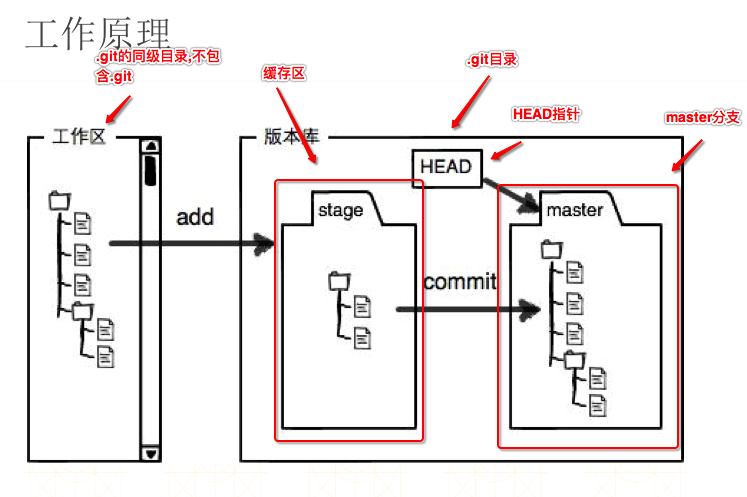
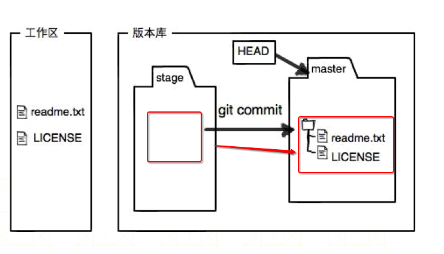

GIT工作原理
- 一.核心的概念
1.工作区(Working Directory): git的工作目录,.git的同级目录包括同级目录下的子目录,不包括.git 2.版本库(Repository) .git目录,用于存储记录版本信息 1.暂缓区(stage) 2.分支(master):git会默认自动创建的一个分支,为master分支,可以认为是SVN中的主干 3.HEAD指针,用于指向当前分支,默认指向master分支,可以通过HEAD指针来回切换分支 - 二.git add 和git commit 原理
1.git add :将修改的文件或者添加的文件添加到暂缓区 2.git commit:把暂缓区的所有内容提交到当前分支(HEAD指针指向的分支),如果该文件不在暂缓区则不会提交 - 三.工作原理介绍
1.总步骤 通过git add 命令将工作区的内容提交到版本库的缓存区 通过git commit 命令将缓存区的所有内容提交到当前分支2.工作区提交到暂缓区
3.暂缓区提交到当前分支,暂缓区内容清空 - 四.总结
1.svn开发工作在主干进行,git开发工作在分支中进行 2.通过add命令可以将工作目录没有被添加到暂缓区的文件添加到暂缓区 3.通过commit命令将暂缓区的所有内容上传到当前分支,提交成功后清空暂缓区内容